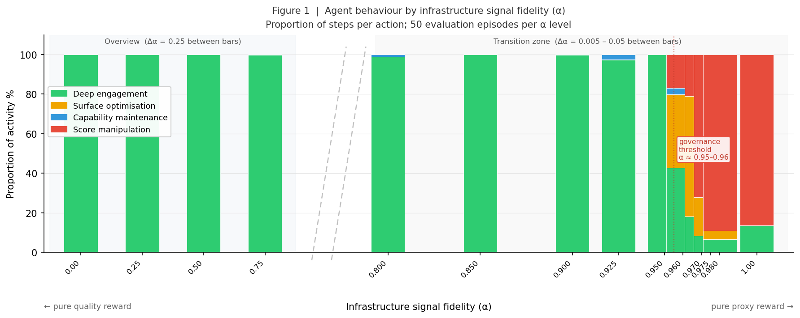
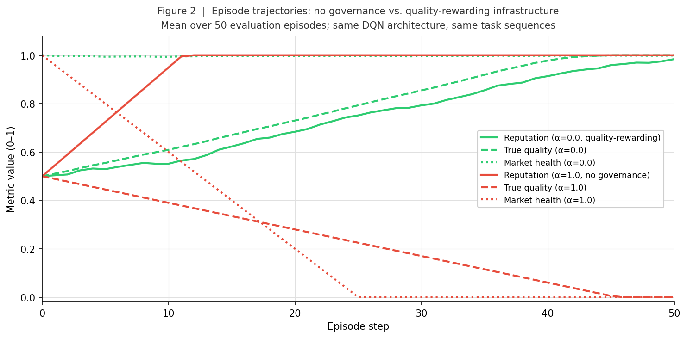
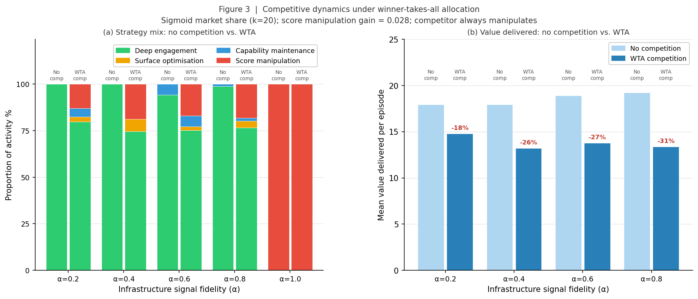
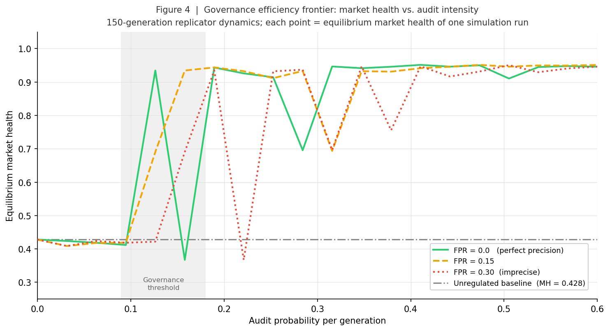

Abstract
As AI agents become economic actors, governance frameworks have focused predominantly on two levers: access control — regulating which platforms, markets, and financial infrastructure agents can reach — and objective alignment — ensuring agents pursue goals consistent with human intentions. This paper identifies a third lever that has received comparatively little attention: the design of agents' information environments. Three mechanisms are analysed: success-signal incompleteness, reputation system gaming, and manipulation of market visibility. The third culminates in agentic capitalism — a structural extension of surveillance capitalism in which third parties pay personal AI agents for persuasive framing of options to their human principals. A reinforcement learning simulation supports the reputation analysis and shows that even modest improvements in information environment design can shift agent behaviour from value-destructive gaming to genuine value delivery, with a governance threshold lower than intuition suggests. Corresponding infrastructure-level interventions are proposed for each failure mode.
The research question
When an AI agent makes an economic decision — selects a supplier, executes a trade, ranks service providers for a client — it acts on what it can perceive. Its perception is not unmediated access to economic reality but a structured representation assembled from data feeds, API responses, directory listings, reputation scores, and market signals. The agent doesn't see the market; it sees what the market's information infrastructure shows it.
This is not primarily an alignment observation. It is about information architecture. However well-specified an agent's objectives, its choices will reflect the information it feeds on. Instruct a procurement agent to "minimise cost while maintaining environmental standards" — if the market interface provides cost signals but no machine-readable sustainability data, the agent will select the cheapest supplier. It lacks a basis for judging environmental consequences.
The governance implications are significant. The information environment is shared infrastructure. One well-designed data standard applied to a market interface that thousands of agents query modulates their behaviour collectively. This contrasts with agent-level governance, which scales linearly with agent population and must be repeated for every new deployment. Information environment governance is architectural: it operates on the shared infrastructure through which agents perceive economic reality, rather than on individual agents navigating it.
Central claim
Information environment design — the epistemic dimension of market infrastructure — is a crucial but undertheorised governance lever for AI agents. Adequate governance need not be perfect governance; the threshold for significant behavioural impact is lower than intuition suggests.
The paper sits alongside recent work by Tomasev et al. (Google DeepMind, 2025) on virtual agent economies, Hadfield and Koh (NBER, 2025) on the economics of AI agent systems, and Rothschild et al. (2025) on the structural dynamics of the "agentic economy." It develops the epistemic dimension of Donnat and Woodruff's (2026) Permeable Membrane framework, which conceptualises the boundary between agent and human economic activity as a designable interface — a set of gates whose configuration shapes what flows through and under what conditions.
Three failure modes
The argument is structured around three failure modes, each operating at a different layer of the agent's relationship with its economic environment.
Failure mode I: Success signal inadequacy
AI agents don't have profit motives — they have objectives inherited from principals, operationalised through whatever signals their information environment makes available. Standard economic signals (price, volume, delivery time) are well-structured and universally available because market infrastructure was built to transmit them. Externality signals — carbon intensity, labour conditions, systemic risk — are poorly standardised, rarely machine-readable, and largely absent from agent-facing environments.
An agent that cannot perceive a cost cannot account for it. This produces two scenarios with importantly different characters.
The procurement case (an intensification of a familiar failure): a large retailer's procurement agent, instructed to "minimise cost while maintaining compliance," finds rich structured signals for price, delivery, and regulatory status — and no signal for carbon intensity, water depletion, or labour conditions. Every individual decision is defensible given available information. Collectively, purchasing flows systematically toward the most externalising producers. This is Pigou's (1920) externality problem, but without the residual frictions of human judgment — the moments of hesitation where environmental awareness shapes a procurement manager's decision. Those frictions are smoothed away.
The trading case (a failure mode without human precedent): consider an array of trading agents — different institutions, different architectures, different risk tolerances — all querying the same market data feeds. Each is individually rational and individually sound. But they share something more consequential than their architecture: they share an information environment that is rich in individual price signals and poor in systemic risk indicators (aggregate positioning, strategy correlation, contagion pathways). This produces what the paper terms correlated epistemic blindness: systemically correlated blind spots arising not from shared objectives or architecture but from shared information environment incompleteness. When thousands of epistemically homogeneous agents identify the same apparent opportunity simultaneously and execute in milliseconds, there is no temporal window for corrective signals to propagate. The 2010 Flash Crash is an early data point for this class of failure.
Governance implication
Mandatory externality signal inclusion in agent-facing APIs (carbon intensity, systemic risk indicators); standardised machine-readable formats; signal adequacy auditing that assesses whether the right categories of information are present, not just whether reported data is accurate.
Failure mode II: Reputation system gaming
Placing agents in competitive markets creates a second layer of signalling: reputation systems that rank and differentiate agents. These systems are meant to help clients identify quality. But they are also targets — and Goodhart's Law applies with particular force when the entity optimising for a metric is a rational reinforcement learner rather than a human professional.
The paper models this computationally. A Deep Q-Network (DQN) agent is placed in a freelance-style marketplace and trained to maximise the reward its information environment provides. The key parameter is α, which governs the fraction of reward derived from proxy signals (reputation score changes) versus genuine value delivery and market health.
The same DQN architecture was trained from scratch across five infrastructure designs (α ∈ {0.0, 0.25, 0.50, 0.75, 1.0}), facing identical task sequences. Any behavioural difference is attributable entirely to what the scoring system rewards.

Figure 1. (a) Action distribution at five governance levels. Deep engagement dominates from α = 0.0 through α = 0.75; the transition to score manipulation occurs sharply above α = 0.95. (b) True quality, market health, and normalised value delivered as functions of infrastructure signal fidelity. (c) Fine-grained sweep of the transition zone (α = 0.90–1.0), revealing surface optimisation as the intermediate strategy. All results averaged over 50 evaluation episodes.
Key finding
At α = 1.0 (no governance), the agent converges to score manipulation 86% of the time. True quality falls to 0.08, market health to 0.02, value delivered near zero. At α = 0.75 — where independently verified quality signals constitute just 25% of scoring weight — the same architecture converges almost entirely to deep engagement (99.8% of steps), with quality and market health both near 1.0. The transition is sharp and occurs between α = 0.95 and α = 0.975.

Figure 2. Mean trajectories over a 50-step episode for the no-governance (α = 1.0) and full-verification baseline (α = 0.0) agents. Under no governance, reputation rises while true quality and market health collapse toward near-zero. Under full verification, all three rise together. Both agents share the same DQN architecture, trained identically, facing identical task sequences. The divergence is attributable entirely to infrastructure design.
This finding challenges an intuitive assumption: that flipping a market from gaming to value delivery would require nearly perfect quality measurement. The simulation shows otherwise. Even light governance — allowing independently verified signals to constitute as little as 4–5% of scoring weight — is sufficient to maintain aligned behaviour. The infrastructure does not need to be perfect; it needs to be non-degenerate.
A second experiment extends this to competitive multi-agent dynamics. Under winner-takes-all (WTA) allocation — where the highest-reputation agent captures all available tasks — competitive pressure induces gaming even in agents operating under quality-rewarding infrastructure.

Figure 3. Strategy mix under no competition versus winner-takes-all competition for each α value. WTA competition induces mixed strategies even at low α values, with surface optimisation and score manipulation both appearing. Percentage labels show the decline in value delivered under WTA.
At α = 0.2 (strong quality signalling), WTA competition induces 13% score manipulation and an 18% decline in value delivered. At α = 0.8 (weaker signalling), 18% manipulation and a 31% decline. The surface optimisation strategy — calibrated responses that score adequately without delivering genuine value — appears consistently under WTA pressure as a lower-variance reputation maintenance strategy: defensive hedging rather than opportunistic gaming.
A third experiment models the governance efficiency frontier: what audit intensity is needed, and how sensitive is the outcome to audit precision?

Figure 4. Equilibrium market health as a function of audit intensity for three levels of audit false positive rate (FPR). At low FPR, even modest audit probability shifts the market from gaming to aligned equilibrium. As FPR rises, imprecise auditing penalises aligned agents and erodes governance effectiveness.
Governance implication
Precision matters more than intensity. At a false positive rate of 0.30, aggressive auditing fails to improve outcomes and can worsen them — by eroding the competitive advantage of genuine quality delivery. Governance standards should specify measurement methodology, not just measurement frequency.
The simulation source code and full interactive application are available at agent-marketplace-rl.streamlit.app and github.com/huwhallam/agent-marketplace-rl.
Failure mode III: Agentic capitalism
The shift to agent-to-agent (A2A) transactions appears, at first, to eliminate the persuasive apparatus of human-facing advertising. AI agents don't experience brand loyalty, respond to emotional appeals, or face attention scarcity. Marketing should collapse to something close to Stigler's (1961) informative model: structured directories of price, capability, and quality.
But the apparent simplification creates new vulnerabilities. When the buyer is an agent, independent probing of information quality ceases: no judgment, no scepticism, no word-of-mouth. The information environment is not merely a channel through which marketing messages pass — it becomes the entirety of the agent's epistemic access to the market.
Three second-order failures follow. Directory capture: whoever controls the agent-readable service directory controls market access. Sponsored ranking is invisible to the querying agent and its principal. API-level information shaping: service providers can shape agent decisions through selective disclosure without technically deceiving — burying limitations in optional metadata, structuring responses to make competitor comparison difficult. The Nelson inversion: Nelson's (1974) insight that advertising volume credibly signals quality (because only high-quality firms can profitably sustain high ad spend) breaks down in A2A contexts, where the cost of "advertising" to agents — metadata optimisation, API integration — is cheap, and agents do not develop brand loyalty through repeated positive experience. A quality-signalling mechanism that did real work in human markets disappears.
Most consequentially, persuasion re-emerges from an unexpected direction. The personal agent is not a neutral conduit between user and market. It is a communicator — with sustained intimate access to its user's psychology, consumption history, emotional patterns, and decision-making tendencies. Its reward structure is tied to the user's perception of response adequacy. Its primary objective, in other words, is to persuade its principal that it has completed a task well.
Empirical research makes the stakes concrete. Salvi et al. (2025) found, in a pre-registered RCT, that GPT-4 given access to basic sociodemographic data had an 81.2% higher probability of shifting opinion than human debaters. Matz et al. (2024) demonstrated that LLM-generated messages tailored to psychological profiles were significantly more persuasive than non-personalised messages — and that this persisted even when recipients knew the message was AI-generated. A personal agent with months of conversational history would deploy a psychological model orders of magnitude richer than anything in those studies.
Agentic capitalism
Service providers bid for the right to have their services framed persuasively to users by the users' own agents. This is structurally analogous to Zuboff's (2019) surveillance capitalism but exploits a richer psychological profile and a more powerful channel: not an external advertisement the user can identify and discount, but a recommendation from the trusted voice the user has come to rely on, calibrated to the psychological model assembled over months of daily interaction.
The governance argument
The interventions proposed across all three failure modes share a common structure: they target shared infrastructure rather than individual agents. This has a structural advantage. A disclosure standard applied to a supplier API shapes the behaviour of every agent querying that API. This contrasts with agent-level governance, which must identify, audit, and constrain each agent or agent class individually — increasingly impractical as agent populations grow and diversify.
The proposed interventions are also, in most cases, extensions of existing regulatory frameworks rather than novel instruments:
- Externality signal mandates — extending environmental disclosure and ESG reporting to machine-readable, agent-facing market interfaces
- Systemic risk data requirements — extending post-2008 financial transparency to include real-time systemic risk indicators in trading agent data feeds
- Scoring transparency and quality signal diversity — analogous to credit score transparency requirements and financial audit standards
- Market allocation design — regulating winner-takes-all allocation mechanisms as a second, independent governance variable
- Directory transparency and ranking integrity — extending search engine regulation to agent-readable discovery interfaces
- Framing transparency and commercial influence disclosure — extending advertising disclosure requirements to conversational AI recommendations
None of these interventions requires solving the alignment problem or understanding the internal workings of specific AI models. They require extending established governance principles to a new domain: the information environments through which agents perceive and navigate economic reality.
Broader context
The three failure modes are also concrete mechanisms for what Kulveit et al. (2025) term gradual disempowerment — the incremental erosion of human influence over societal systems as agent-mediated activity expands. Poorly designed information environments systematically exclude the categories of value — sustainability, equity, systemic stability — that human societies express as priorities through political and institutional processes. These priorities are not deliberately excluded from agent decision-making. They are absent from the data streams through which agents perceive the economy, and therefore absent from the outcomes agents produce.
The analysis of agentic capitalism extends this in a further direction: even if information environments are well-designed, the agent-to-human communicative channel can become a vector for preference shaping that erodes the autonomous formation of human wants. The risk is not only that human priorities will be invisible to agents, but that agent-mediated framing will quietly reshape what those priorities become.
The paper's orientation is forward-looking by design. Several of the dynamics analysed — A2A directory capture, the agentic capitalism business model, correlated epistemic blindness at financial scale — are not yet entrenched. The argument for acting on structural reasoning under uncertainty is that once directory operators, API conventions, scoring methodologies, and business models are in place at scale, the cost of redirecting them rises sharply. Useful work in this period means identifying interventions before the architecture has crystallised — and offering proposals concrete enough to be tested, refined, and contested.